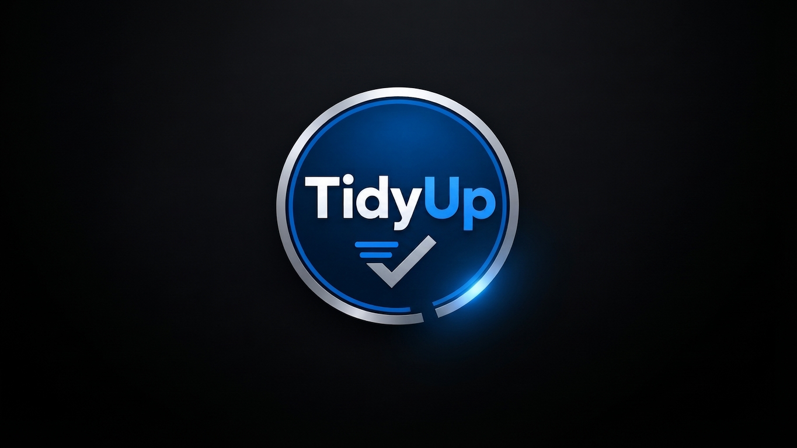

Il sistema gestionale professionale per attività commerciali e organizzazione domestica.
🔒 100% Gestione in LOCALE
Cosa significa? Significa che tutti i dati restano sul tuo dispositivo e non finiscono su nessun server esterno o cloud. Nessuno può spiare le tue informazioni, garantendoti totale privacy, velocità e controllo anche senza connessione internet.
🚀 Utilizzo completamente GRATUITO
Cosa significa? Significa che il software è e rimarrà gratuito nelle sue funzioni essenziali. In futuro potremmo inserire moduli o funzioni extra opzionali a pagamento, ma il cuore del programma rimarrà sempre libero per tutti.
Scegli il modulo operativo
EatMeFirst
Dedicato esclusivamente all'uso familiare e domestico. Focalizzato sul controllo delle scadenze della spesa di casa, la gestione della dispensa quotidiana e la riduzione degli sprechi alimentari domestici.
ChefStock
Dedicato alle realtà della ristorazione in genere (ristoranti, pizzerie, bar, mense e attività di somministrazione). Ottimizzato per la gestione professionale di scorte, lotti, fornitori e scadenze commerciali.